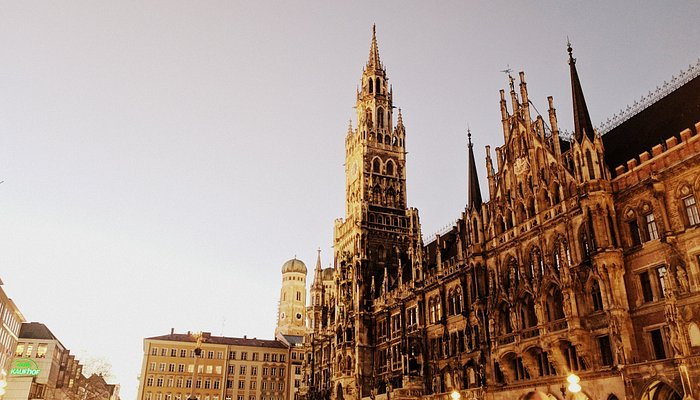

This prominent public square, the largest in Munich, still stands as the
center of social activity in the city, much as it has throughout
history.
Top Attractions
Munich Marienplatz
English Garden
Residenz München
Foods To Try
Schweinshaxe
- A traditional German dish of roasted pork knuckle
Obatzda
- A rich, creamy Bavarian cheese delicacy
Leberkäse
- A type of meatloaf, often served in a bun (Leberkässemmel).
Travel Glossary
The U-Bahn and S-Bahn
- The U-Bahn is the subway system, mostly underground.
- The S-Bahn is a commuter rail network connecting the city center with
suburbs and rural areas, running on surface tracks outside the city
center and underground in the core.
Hofbräuhaus
- A historical term for a royal brewery that now often designates a
large beer hall or restaurant.